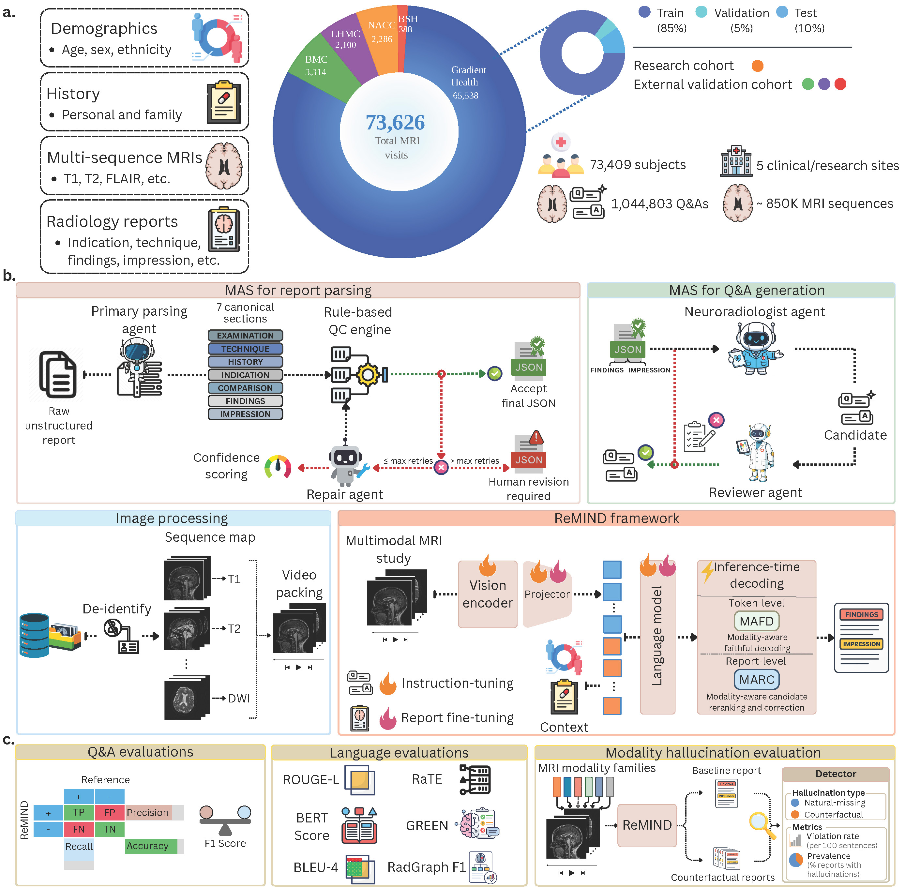
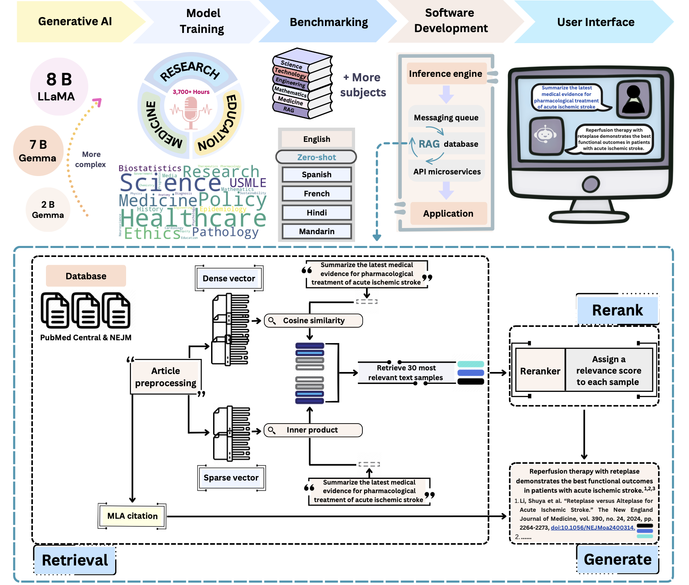
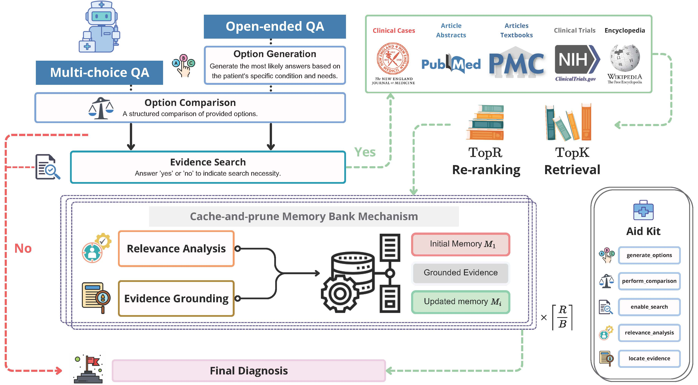
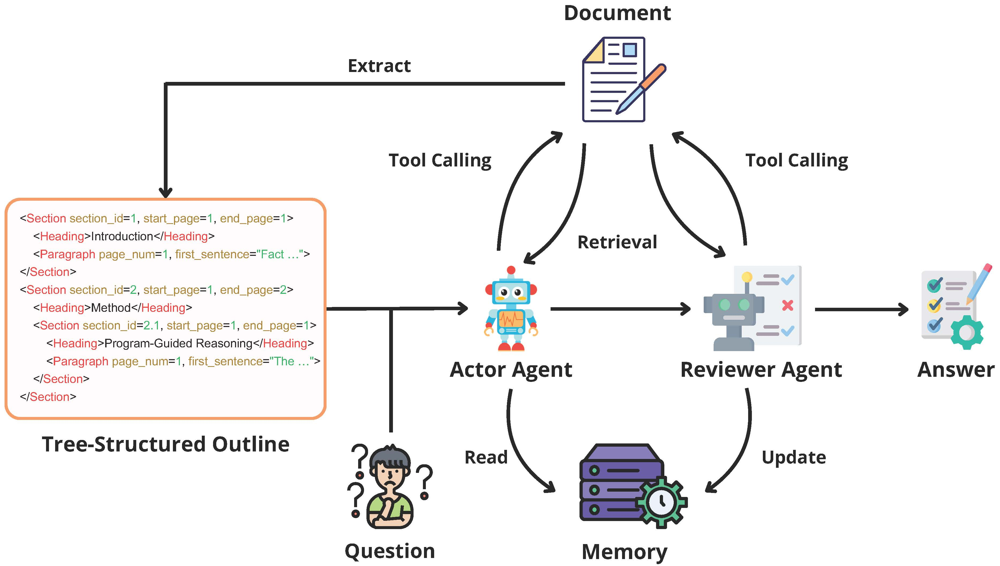
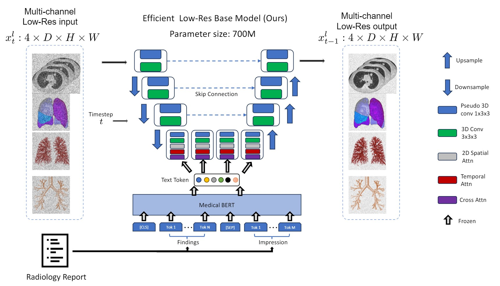
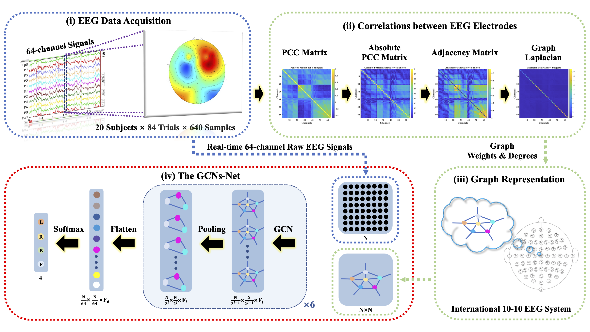
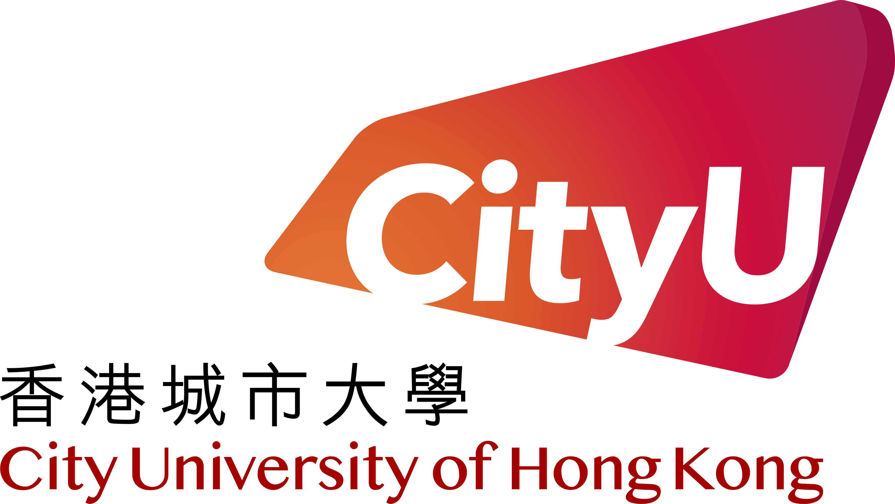
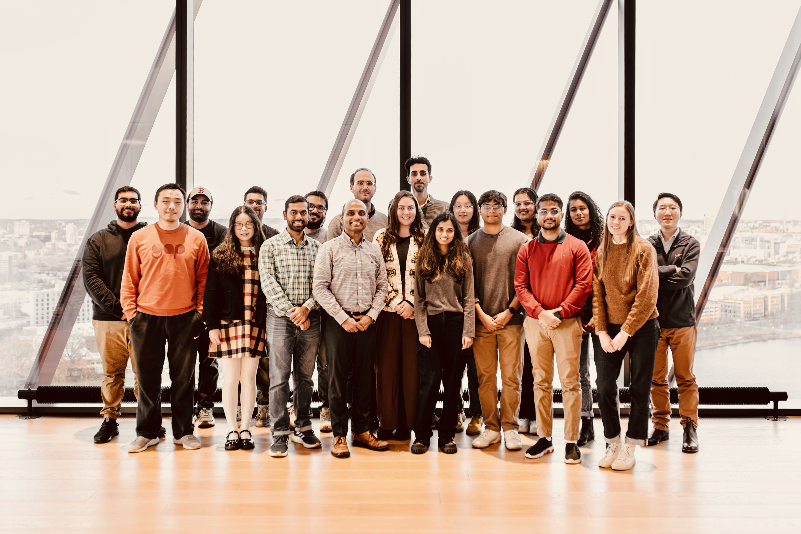
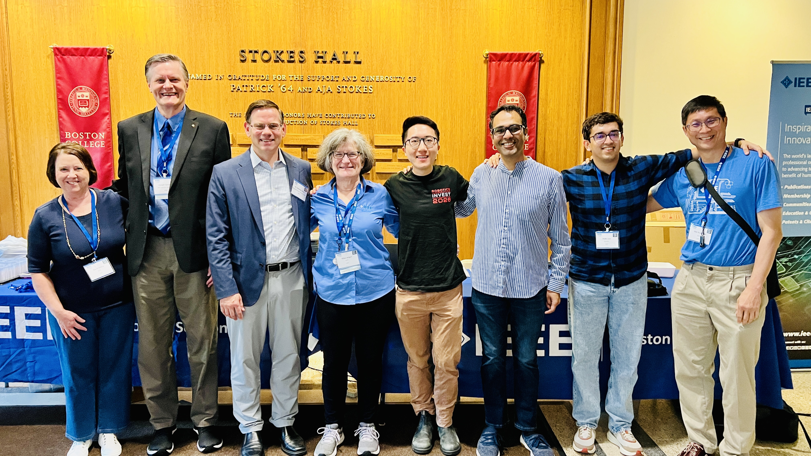

Boston University · Computer Engineering
Shuyue Jia 0 builds frontier AI for science, medicine, and human-machine interaction. His work moves from academic research 1, 2 into deployed systems 3 — and continues beyond the lab 4 through teaching, service, athletics, and photography 5.
Prior to BU, Shuyue received an M.Phil. in Computer Science (2023) from City University of Hong Kong, supervised by Prof. Shiqi Wang, and a B.Eng. in Intelligence Science and Technology (2020) from Northeast Electric Power University. His Ph.D. research builds trustworthy autonomous AI systems grounded in real-world evidence — spanning retrieval, attributional, modality/sequence, temporal, and physical/spatial grounding — with the long-term goal of AGI for science, medicine, and human-machine interaction.
Read the Research Statement.
-
FUNDING
Received $20,000 in Claude credits through the MIT–Anthropic AI for Science Study.
-
PRODUCT
ReMIND — video foundation model for multi-sequence brain MRI — is live.
-
PAPER
Medical Agentic RAG accepted by International Journal of Medical Informatics.
-
PAPER
DocAgent accepted by EMNLP 2025.
-
PAPER
PodGPT accepted by Nature npj Biomedical Innovations.
-
AWARD
2025 IEEE Boston Section Arthur Winston Student Award.
-
PRODUCT
PodGPT platform opened to the public.

ReMIND: Vision-language framework for multi-sequence brain MRI

PodGPT: Audio-augmented LLM for research and education

Agentic memory-augmented retrieval & evidence grounding

DocAgent: Multi-agent long-context document understanding

MedSyn: Text-guided anatomy-aware 3D CT synthesis

GCNs-Net: Graph CNNs for EEG motor imagery
- Topic 1 — Trustworthy multimodal foundation models ReMIND, MedSyn, GRAM model merging, PodGPT / MedPodGPT, medical LLM evaluation.
- Topic 2 — Grounded autonomous AI systems Medical Agentic RAG, DocAgent multi-agent document intelligence.
- Topic 3 — Computer vision No-reference IQA via non-local modeling; monotonic IQA across mixed datasets.
- Topic 4 — EEG-based BCI GCNs-Net, Attention BiLSTM-GCN, ESI-CNN motor imagery decoding.

Ph.D. Student

M.Phil.
B.Eng.

Local Conference Committee
-
PodGPT Library Benchmarking multilingual medical LLMs; PodRAG retrieval pipeline.
-
EEG-DL Deep learning library for EEG signal classification.
-
PromptCraft Prompt perturbation toolkit for robustness analysis.
Teaching assistant
-
2026
ENG ME 345: Automation and Manufacturing Methods, Boston University
-
2025
ENG EC 327: Introduction to Software Engineering, Boston University
-
2024
ENG EC 500: Medical Imaging with AI, Boston University
Service
-
2026
Chair, IEEE Boston Section Circuits and Systems Society, Boston, MA
-
2026
Program Committee Member, Association for Computational Linguistics (ACL) Industry Track, San Diego, CA
-
2026
Technical Committee Member, Embodied AI Systems, IEEE Systems, Man, and Cybernetics Society
-
2025
Track Chair, IEEE MIT Undergraduate Research Technology Conference (URTC), Cambridge, MA
-
2025
Speaker Program Chair, IEEE International Conference on AI and Data Analytics (ICAD), Boston, MA
-
2025
Scientific Program Committee Member, AMIA Clinical Informatics Conference, Anaheim, CA
Reviewing
- IEEE Transactions on Pattern Analysis and Machine Intelligence (T-PAMI)
- IEEE Transactions on Multimedia (T-MM)
- IEEE Transactions on Circuits and Systems for Video Technology (T-CSVT)
- IEEE Transactions on Neural Networks and Learning Systems (T-NNLS)
- IEEE Transactions on Medical Imaging (T-MI)
- IEEE Transactions on Industrial Informatics (T-II)
- IEEE Transactions on Biomedical Engineering (T-BME)
- IEEE Transactions on Human-Machine Systems (T-HMS)
- IEEE Transactions on Affective Computing (T-AFFC)
- IEEE Transactions on Cognitive and Developmental Systems (T-CDS)
- IEEE Transactions on Emerging Topics in Computational Intelligence (T-ETCI)
- IEEE Journal of Biomedical and Health Informatics (J-BHI)
- IEEE Journal of Selected Topics in Signal Processing (J-STSP)
- IEEE Open Journal of the Industrial Electronics Society (OJ-IES)
- IEEE Open Journal of the Computer Society (OJ-CS)
- IEEE MultiMedia (MM)
- IEEE Sensors Journal
- Computer Vision and Image Understanding (CVIU)
- Journal of Medical Internet Research (JMIR)
- IET Image Processing
- IET Science, Measurement & Technology
- Neural Information Processing Systems (NeurIPS)
- Association for Computational Linguistics (ACL) Industry Track
- International Conference on Learning Representations (ICLR)
- IEEE International Conference on Acoustics, Speech, and Signal Processing (ICASSP)
-
2025
IEEE Boston Section Arthur Winston Student Award
-
2025
Boston Marathon · Abbott World Marathon Majors
-
2023
Standard Chartered Hong Kong Marathon
-
2021
CityU Top 5 Runner, City University of Hong Kong
-
2018
Mathematical Contest In Modeling, Jilin, China · First Prize
-
2017
Outstanding Athlete, Northeast Electric Power University
-
2015
Chinese Physics Olympiad (CPhO), China · Third Prize
-
2015
National High School Math League, China · Second Prize

Kolachalama Laboratory
